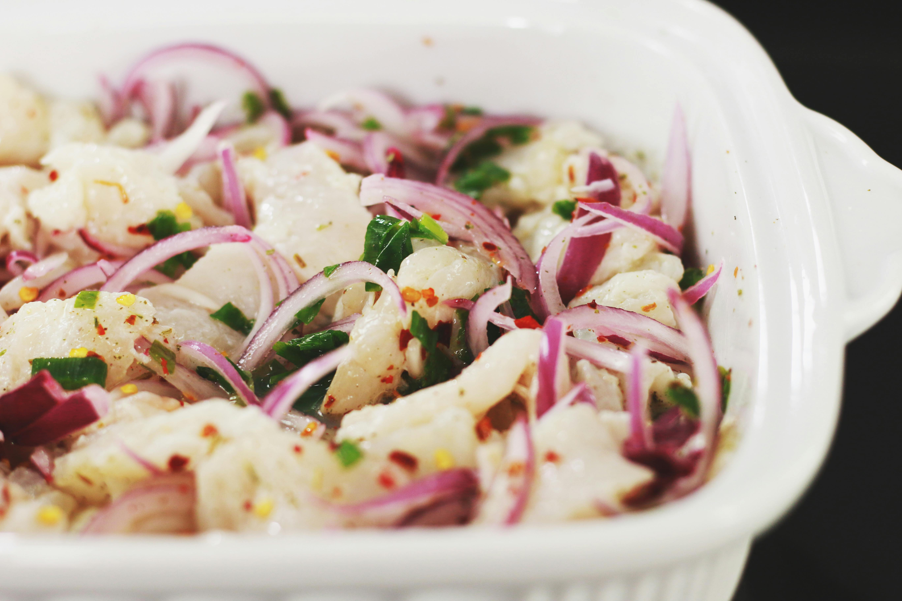

Home
Ceviche

Description
This delicious, fishy dish is eaten all over Central and South America! Perfect for a hot Summer day, ceviche will
make you feel cooler after bowl (or two).
Due to all of the regional variety you can have when preparing ceviche, we're only going to show you how to make
one of the simplest, but not necessarily the lamest, recipes: Costa Rican ceviche! This specific variety of ceviche
is often served with tortilla chips or patacones. You can even have it on crackers!
Ingredients
- 1 small red onion
- 1 red bell pepper
- 1 small piece of ginger root
- 1 bunch cilantro
- 1 cup freshly squeezed lime juice
- 1 pound raw white fish (such as sea bass, cod, or corvina)
- Salt to taste
Steps
- Finely chop onion, bell pepper, ginger, and cilantro. You should have equal parts of each vegetable, except
ginger, which should be half as much.
- Squeeze limes into juice
- Dice the fish.
- In a large glass bowl, toss the diced vegetables and fish. Pour the lime juice over the entire bowl and gently
stir
- Let the ceviche marinate for at least 30 minutes, and up to 12 hours
- Before serving, add salt to taste
Home